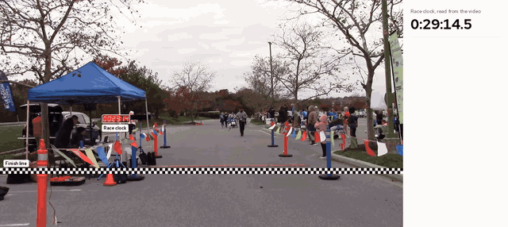

VideoPacer watches a finish line, finds each runner's bib, reads the number and gives every runner a finish time, live, on a phone.

Honolulu Marathon 2014 footage: detected bibs, race clock read from the video, live leaderboard.
Tested on 17 clips of 15 s from real races, labelled by hand and never used in training.
| Video | Bibs in truth | Found | Wrong |
|---|---|---|---|
| sample1 | 11 | 11 | 0 |
| sample2 | 19 | 19 | 1 |
| sample3 | 22 | 22 | 3 |
| sample5 | 26 | 26 | 0 |
| sample6 | 14 | 14 | 0 |
| sample7 | 13 | 12 | 0 |
| sample8 | 7 | 7 | 0 |
| sample9 | 10 | 6 | 1 |
| sample11 | 4 | 4 | 0 |
| sample13 | 10 | 6 | 0 |
| sample14 | 10 | 10 | 0 |
| sample15 | 2 | 2 | 0 |
| sample16 | 5 | 3 | 0 |
| sample17 | 7 | 7 | 0 |
| sample18 | 15 | 15 | 2 |
| sample19 | 6 | 6 | 0 |
| sample20 | 6 | 5 | 1 |
Each camera runs the whole pipeline itself. A server only merges the results of several cameras and is never in the frame loop, so it works live and with a weak connection. Android first, then PC and iPhone.
The source is private while the project is in progress. Happy to walk through it or share access.
Get in touch via GitHub